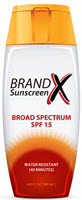
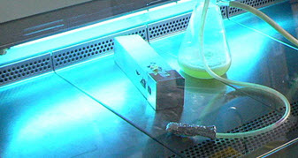

Ultraviolet
Ultraviolet (also called UV) is between visible light and X-rays in the electromagnetic spectrum:
The wavelength range is about 380 nanometers (380 billionths of a meter) to 10 nanometers.

Ultraviolet is invisible to the human eye.
The Sun sends out UV in all wavelengths, but only some get through the atmosphere.
The ranges from lowest to highest energy are:
UVA
- Ultraviolet A (315 to 400 nanometers) gets through our atmosphere
- Leads to premature aging of skin
- Can lead to some types of cancer
- Nickname: "UV Aging"
UVB
- Ultraviolet B (280 to 315 nanometers) is partly absorbed by the atmosphere
- UVB helps our bodies produce Vitamin D. And Vitamin D is good for us.
- But too much UVB can cause sunburn, damage to our eyes and is the most common cause of skin cancer
- Nickname: "UV Burning"
UVC
- Ultraviolet C (100 to 280 nanometers) is completely absorbed by the atmosphere
- is very dangerous to us
- but since none gets through to us from the Sun it is not a problem

Sun Safe
So UV is mostly bad for us, except for the benefit of Vitamin D.
On balance we should be careful how much UV exposure we get, using sunscreen (one that blocks both UVA and UVB), sunglasses, wide hats and protective clothing.
Extreme Ultraviolet
Beyond UVC is "extreme ultraviolet" (10 to 121 nanometers). It is ionizing, meaning it has such high energy it can knock electrons out of atoms, which is very harmful to our cells, killing them or changing them so they grow out of control and form cancer.
Thankfully, extreme UV is also totally absorbed by the atmosphere.
Uses
UV has many uses in science, medicine and industry including:
- disinfection
- decontamination of water
- killing cancer cells (using careful medical procedures!)
- imaging of cells
- forensic analysis
- drug detection
- light therapy in medicine
- bug zappers (flies are attracted to some UV light)
- special glues that harden with UV
- and more

Killing germs with ultraviolet in a Lab